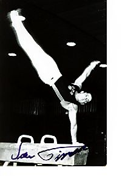

Sven Tippelt (GDR/GER)
1988 Olympic Bronze Medalist on R and PB

Medal Total
Olympic
Games:
1 Silver, 2 Bronze
World Championships: 1 Silver, 3 Bronze
Sven was born on June 3, 1965, in Leipzig. He trained at DHFK Leipzig with coach Peter Scholz. Tippelt has a move on the parallel bars named after him. Sven's father, Frank, was also a gymnast and placed 31st AA at the 1962 World Championships.
Competition Results
1979
GDR Youth Championships: 2nd AA
1983
Jr. GDR-BUL Dual Meet: 1st Team, 1st AA, 1st FX, 2nd PH, 2nd R, 2nd PB, 2nd HB
Jr. GDR-CSSR Dual Meet: 1st Team, 6th AA
Jr. GDR-USSR Dual Meet: 2nd Team, 8th AA, 3rd FX
1984
Olympic Gala Competition: 15th AA
1985
Chunichi Cup: 7th AA, 4th R, 5th HB, 6th PB, 7th V, 8th FX
Cottbus International: 5th AA, 3rd PH
GDR Championships: 1st AA
GDR-SUI Dual Meet: 1st Team, 3rd AA
Moscow News: 11th AA, 4th R, 6th V
Pre-Worlds: 8th AA, 3rd R, 4th FX, 4th V
Tokyo Cup: 2nd PB, 3rd FX
World Championships (Montreal): 3rd Team, 6th R
1986
Ahoy Cup: 4th AA
DTB Cup: 8th AA, 1st V, 1st PB, 2nd FX, 2nd R, 3rd HB
DTV Cup: 1st AA
FRA-GDR Dual Meet: 1st Team, 2nd AA
Gander Memorial: 2nd AA
GDR-RSFSR Dual Meet: 1st AA
Goodwill Games: 2nd Team, 6th AA, 3rd R, 3rd PB
Swiss Cup: 3rd AA
World Cup: 7th AA, 4th FX, 4th HB, 5th R, 7th V
1987
Belgian Gym Masters: 4th AA, 1st R, 2nd PH, 2nd PB, 3rd HB
GDR Championships: 1st AA
GDR-SUI Dual Meet: 1st Team, 2nd AA
ITA-GDR Dual Meet: 1st Team, 5th AA
World Championships (Rotterdam): 3rd Team, 8th AA, 3rd
PB, 4th R
1988
American Cup: 5th AA
Belgian Gym Masters: 3rd AA, 2nd V, 3rd PH, 3rd R, 4th FX, 4th PB
Cottbus International: 3rd AA, 1st PB, 2nd PH, 6th FX
GDR Championships: 2nd AA
Olympics: 2nd Team, 4th AA, 3rd R, 3rd
PB, 7th PH
1989
Beijing International: 5th AA
Chunichi Cup: 8th AA
DTV Cup: 4th AA
World Championships (Stuttgart): 2nd Team, 13th AA, 5th R,
6th FX, 8th PB
1992
GER-HUN Dual Meet: 1st Team, 3rd AA
GER-SUI-ROM Tri-Meet: 1st Team, 6th AA
This page was created on October 12, 2002
and was last updated on November 13, 2011.
© Gymn Forum